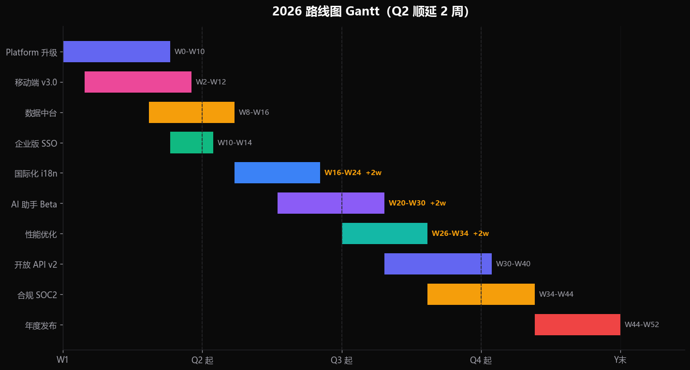
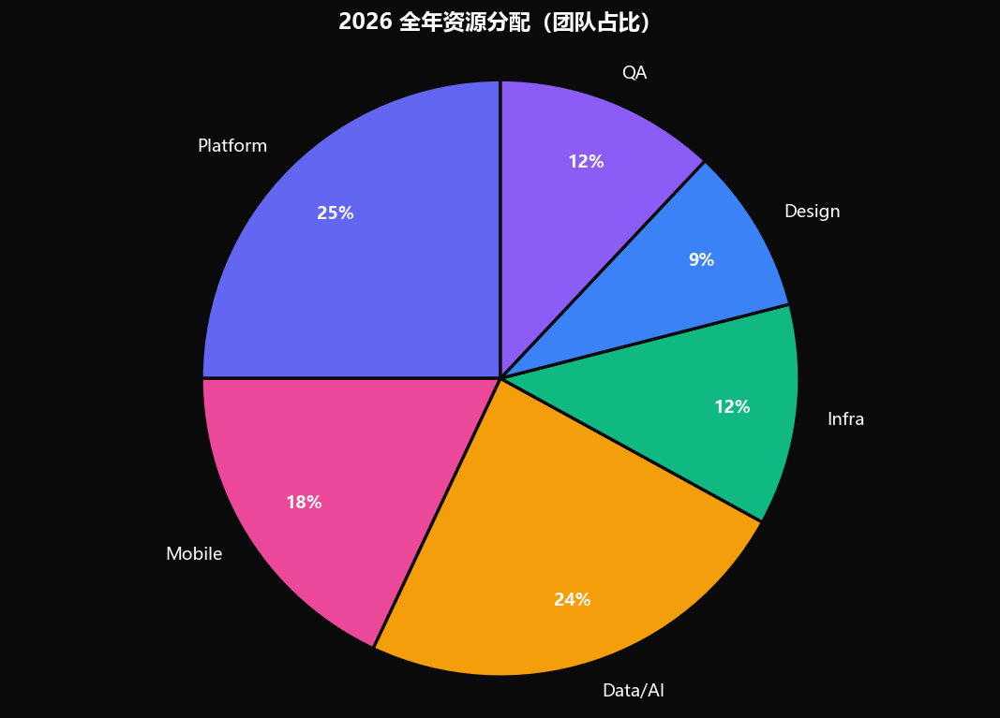
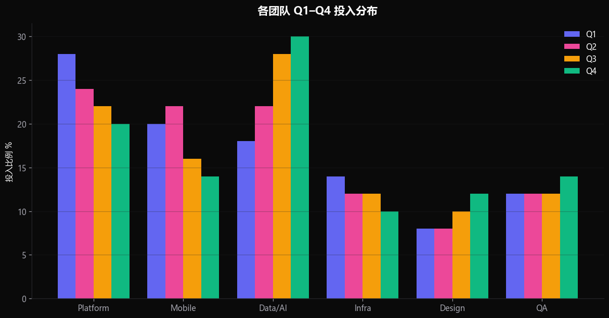
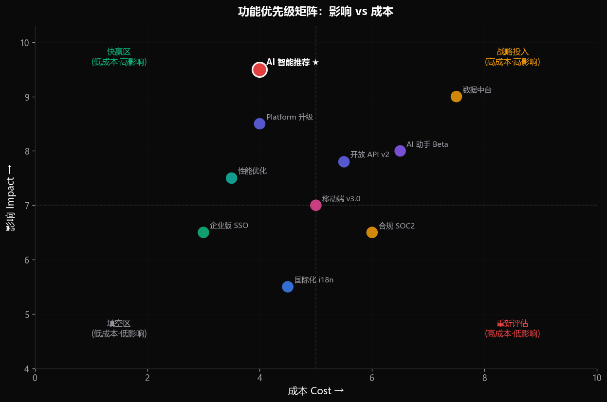

面向企业客户的全年产品规划与执行框架
99.95% 可用性，P99 延迟降至 180ms
新增 12 个企业 Logo，含 3 家世界 500 强
研发团队从 28 人扩张至 51 人
将 AI 能力嵌入到核心工作流，从被动工具升级为智能助手。
完善 SSO、审计、合规、SLA，赢取大型客户的长期承诺。
完成 i18n、多区域部署与本地化运营，覆盖东南亚与欧洲。

⚠ 顺延原因：依赖团队资源紧张 + 数据中台一期收尾占用 2 周冲刺。


基础设施 · 服务网格 · 可观测性
iOS · Android · Cross-platform 构建
数据中台 · 模型 · 推荐 · 智能助手
DevOps · SRE · 安全合规
产品设计 · 设计系统 · 用户研究
自动化 · 性能 · 兼容性测试

用户在功能广度增加后，发现率与激活率持续下滑。通过行为数据的个性化推荐，可将激活率提升 15-25%。
· 基于事件流的实时画像
· 召回 + 排序双层模型
· A/B 实验框架内置
· 推荐解释可观测
本周内完成 6 个中队的目标对齐与 OKR 拆解。
财务确认 Headcount 与第三方采购预算。
周会跟踪 Q2 顺延的下游影响，月度复盘。
TOP20 客户走访，验证主题与优先级假设。
月度全员路线图同步 + 季度董事会汇报。
本周五 16:00 启动 Q1 kickoff 全员会议。
问题与讨论：roadmap@company.com